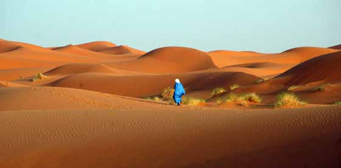

Marokko familierejse
Vi har sammensat en meget alsidig familierejse til Marokko, der kombi- nerer det farvestrålende Marrakech med ophold i den smukke Sahara-ørken. I ørkenen overnatter I på et lille ørkenhotel med udsigt over det smukke ørkenlandskab. Der er mulighed for at forlænge rejsen med ophold i Agadir, hvor I kan nyde stranden og det varme klima.
Oversigt over turen
Vi har sammensat en meget alsidig Marokko-rejse, der kombinerer det farvestrålende Marrakech med ophold i den smukke Sahara-ørken. I ørkenen overnat- ter I under den stjerneklare himmel på et lille ørk- enhotel med udsigt over det smukke ørkenlandskab. Der er mulighed for at forlænge rejsen med ophold i Agadir, hvor I kan nyde stranden og det varme klima. På hele rejsen har I vores lokale, engelsktalende familieguide, der sikre at alt det praktiske fungerer så hele familien kan nyde at være sammen om de mange spændende oplevelser, der venter jer.
I rejser med jeres egen guide og chauffør – og har god tid på egen hånd. Vi har lavet rejser til Marokko siden 2008 og det er den erfaring vi bruger når vi tilrettelægger vores fami- lierejser, hvor der er indlagt ere ting, der især retter sig mod børnene. Vores familierejser er tilrettelagt af forældre med børn og rejserne bygger derfor på de mange erfaringer vi har med at rejse med børn i hele verden. Der er derfor i programmet en del fritid som vi kalder familietid, for på en rejse sammen gælder det også om at slappe af og dele de mange oplevelser i jeres helt eget tempo.
De fleste dage er der program på hele dagen eller dele af dagen, men I bestemmer selv tempoet og I kan undervejs på rejsen tilrettelægge, hvordan dagens skal stykkes sammen. Det er den eksibilitet som de este familier søger og som I sidste ende gør rejsen til en god familieoplevelse.
DAGSPROGRAM (Se detaljer på hjemmesiden)
Dag 1 København – MarrakechDag 2 Marrakech
Dag 3 Marrakech
Dag 4 Marrakech - Aït Ben Haddou - oasebyen Skoura
Dag 5 Skoura - Sahara
Dag 6 Sahara
Dag 7 Sahara - Nakob - Tamnougalt
Dag 8 Tamnougalt - Quarzazate
Dag 9 Quarzazate - Marrakech
Dag 10 Marrakech - afrejse
Rejsen kan forlænges med ophold ved stranden i Agadir.
Pris fra 8.500 kr / børn under 12 år fra 7.500 kr.
Prisen inkluderer:
- Overnatning på hoteller inkl. morgenmad
- Alle måltider, dog undtaget frokost dag 1, 3 og 10, mid- dag dag 10.
- Kørsel i bil/minibus
- Engelsktalende lokal familieguide
- De i programmet nævnte arrangementer og entréer
Prisen inkluderer ikke:
- Fly til og fra Marokko. Kontakt os for de bedste priser.
- Drikkepenge til guide og chauffør
Da rejsen tilrettelægges kun for jeres familie bestemmer I hvornår I ønsker at rejse. Kontakt os derfor for de bedste priser og flytider.